Field-based agricultural computer vision is important for precision agriculture, yet it largely depends on expensive annotations and costly adaptation of large pretrained models. We introduce AgriField-40K, a field-centric dataset curated from 17 public resources and covering diverse crops, weeds, and field conditions. Building on this, we present AgriMAE, a parameter-efficient continual pretraining baseline that adapts a masked autoencoder pretrained on natural images by training only lightweight adapters. We further explore semantic feature reconstruction as an alternative pretraining objective and evaluate transfer across multiple tasks. AgriMAE consistently improves downstream performance and can match or even outperform full fine-tuning while using up to 9× fewer trainable parameters, showing that AgriField-40K is a practical resource for continual pretraining in agricultural vision.
To support the systematic study of efficient continual pretraining, we introduce AgriField-40K, a field-centric agricultural dataset for representation learning, built from 17 public resources into a unified corpus of ~40,000 curated RGB images. Unlike leaf-level or species-ID datasets, it focuses on real field conditions (i.e., crop/weed mixtures, dense canopies, soil backgrounds, and multiple growth stages) captured with handheld cameras, robots, drones, and shrouded platforms.
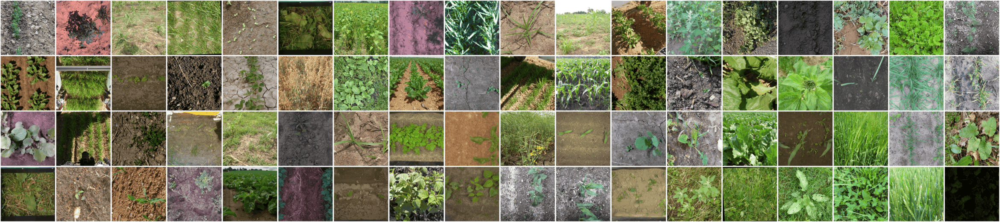
We discard the original annotations and keep only RGB images, apply fixed-interval sampling to remove near-duplicate frames from video/robot sources, and manually filter low-quality images. Each image is resized and center-cropped to 512×512 using Lanczos interpolation. The dataset is split 80/20 for training and validation, and is released under CC BY-SA 4.0.
| Dataset | Year | License | Retained | Domain | Task |
|---|---|---|---|---|---|
| MuST-C | 2026 | CC BY 4.0 | 7,242 | Sugar Beet, Soybean, Potato, Maize, Wheat | – |
| PhenoBench | 2026 | CC BY-SA 4.0 | 9,606 | Sugar Beet & 6 Weeds | Segmentation |
| LUCASVision | 2023 | CC BY 4.0 | 11,195 | 12 Crops | Classification |
| VegAnn | 2022 | CC BY 1.0 | 1,607 | 26+ Crops | Segmentation |
| WE3DS | 2023 | CC BY 4.0 | 1,553 | 7 Crops & 10 Weeds | Segmentation |
| … 12 more sources | |||||
| AgriField-40K | 2026 | CC BY-SA 4.0 | 39,963 | Field-Centric | Pretraining |
Full breakdown of all 17 sources, licenses, and original vs. retained sizes is in the paper (Table 1).
Large-scale pretraining gives vision models strong general-purpose features, but these models are typically pretrained on natural images like ImageNet. Agricultural field imagery looks quite different, with repeated plant structures, fine-grained crop/weed distinctions, occlusion, and large swings in illumination, growth stage, and acquisition platform, creating a domain gap that limits transfer to real field tasks. The natural fix is continual pretraining on in-domain data, but fully updating a large model can be costly, making parameter-efficient adaptation especially valuable when labelled data and compute are limited.
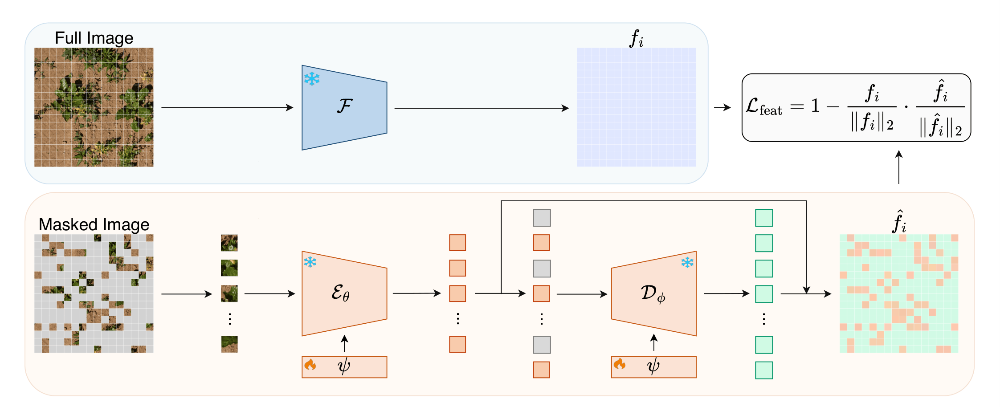
To keep the study controlled, we build on masked image modelling and establish a strong parameter-efficient baseline for continual pretraining. Our approach, AgriMAE, starts with an ImageNet pretrained MAE and continually pretrains it on AgriField-40K to adapt it to the agricultural field domain, while keeping the original encoder and decoder frozen. Only small adapters inserted into each transformer block are trained, both during this continual pretraining stage and the later downstream supervised fine tuning stage. This keeps adaptation cheap: a single consumer GPU is enough, and the majority of the model's parameters remain frozen.
Standard masked image modelling reconstructs pixels, which is simple and effective but provides limited semantic supervision. As an alternative, we reconstruct dense features from a strong, frozen feature extractor computed across the whole image rather than just the masked patches. This pushes the adapters to recover semantic structure rather than low-level pixel detail, which matters for field imagery where crop, weed, and background are often spread across the whole scene.
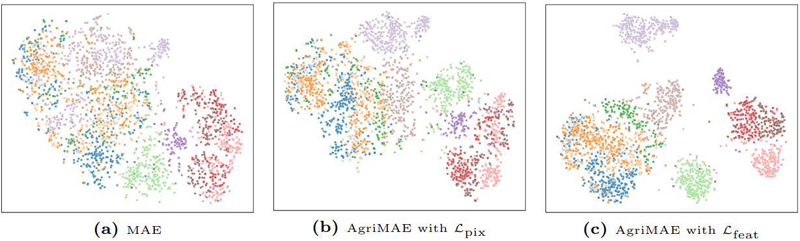
We provide downstream validation showing that our continual pretraining strategy consistently improves performance in parameter-efficient settings across classification, segmentation, and detection. AgriMAE can match or even outperform full fine-tuning while using substantially fewer trainable parameters. We hope AgriField-40K will support future research on efficient continual pretraining and practical agricultural vision applications.
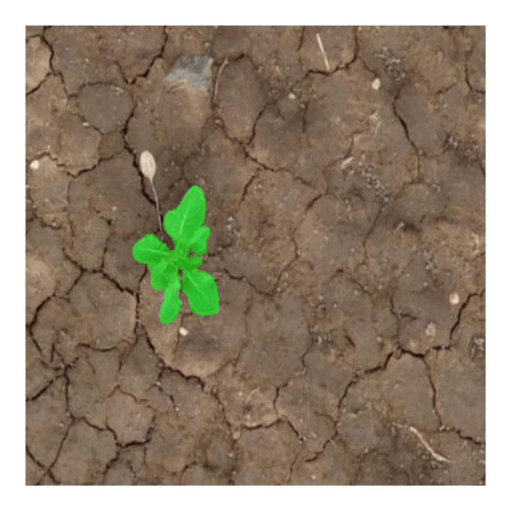
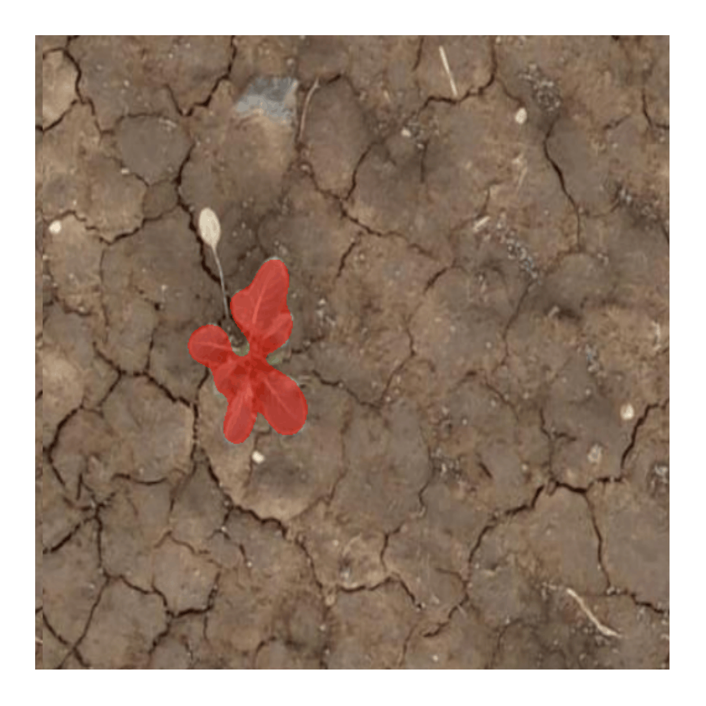
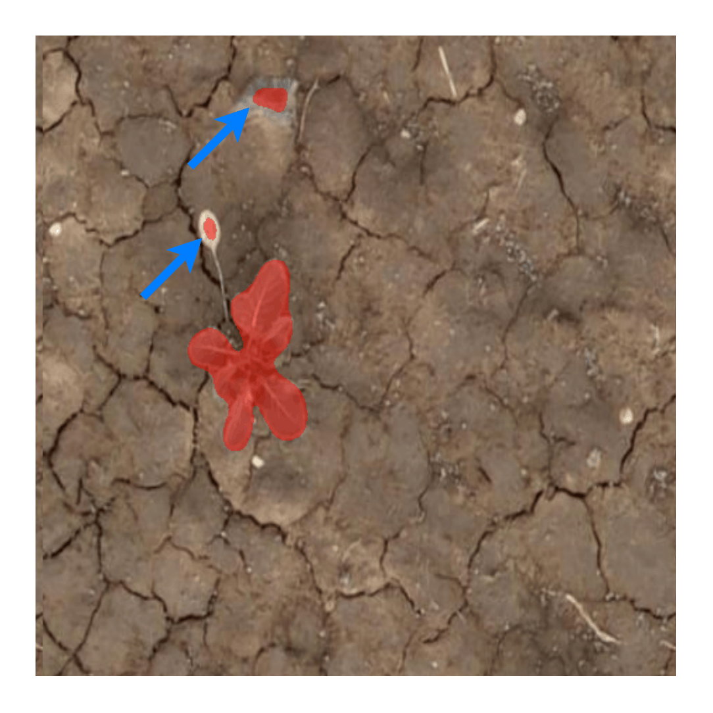
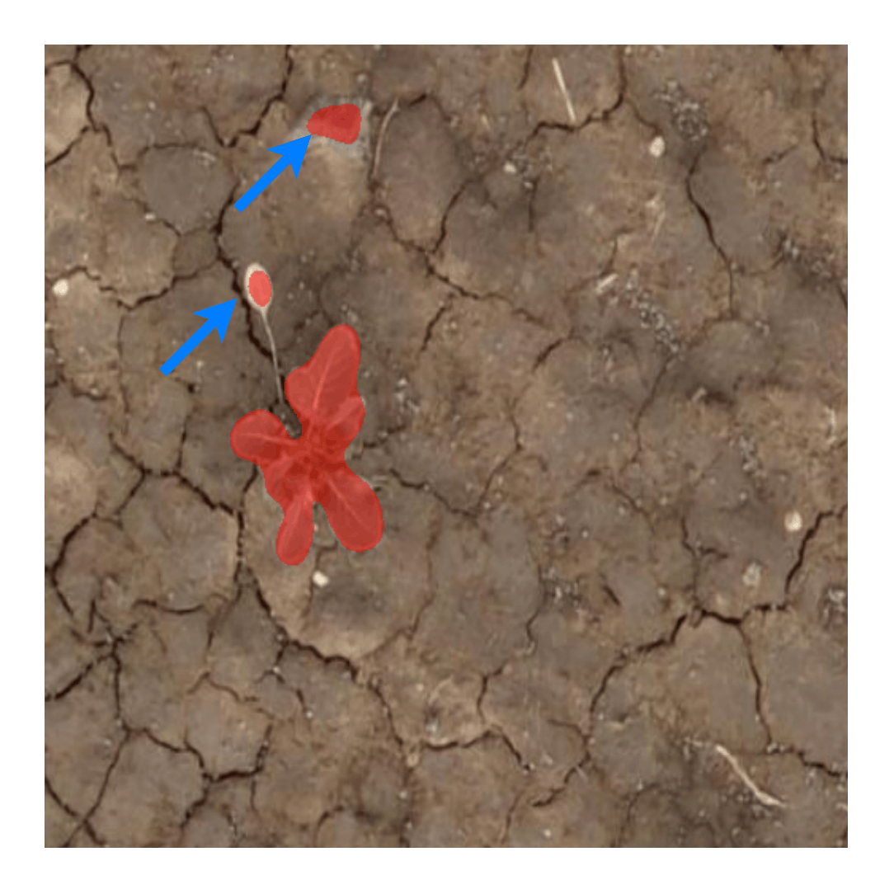
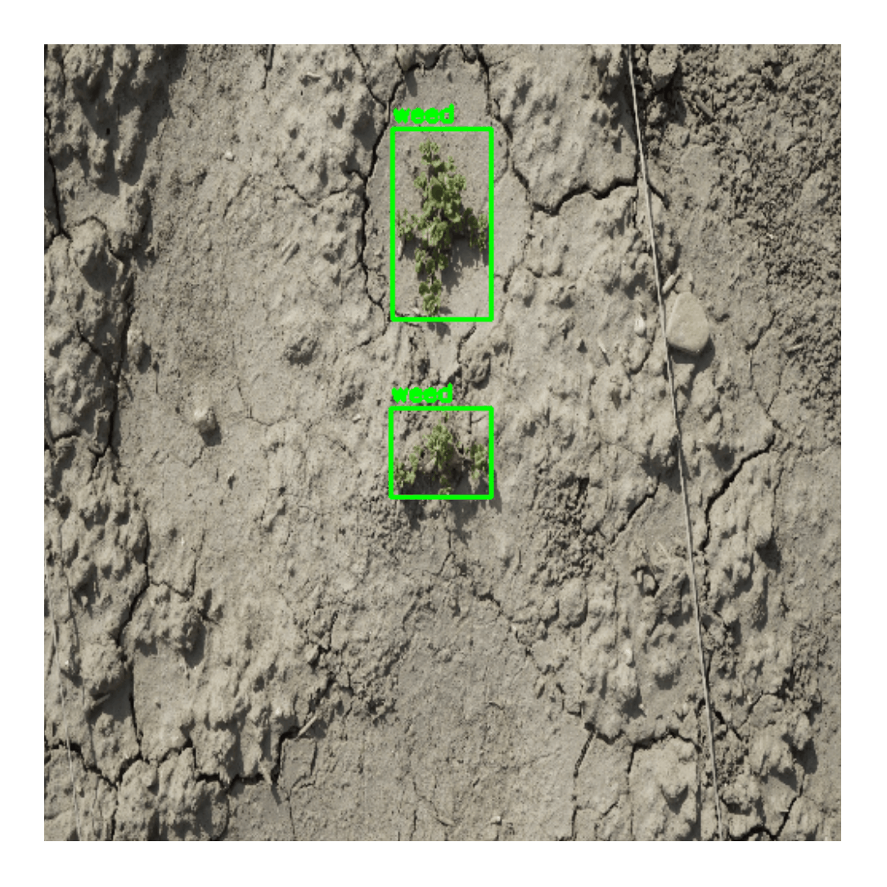
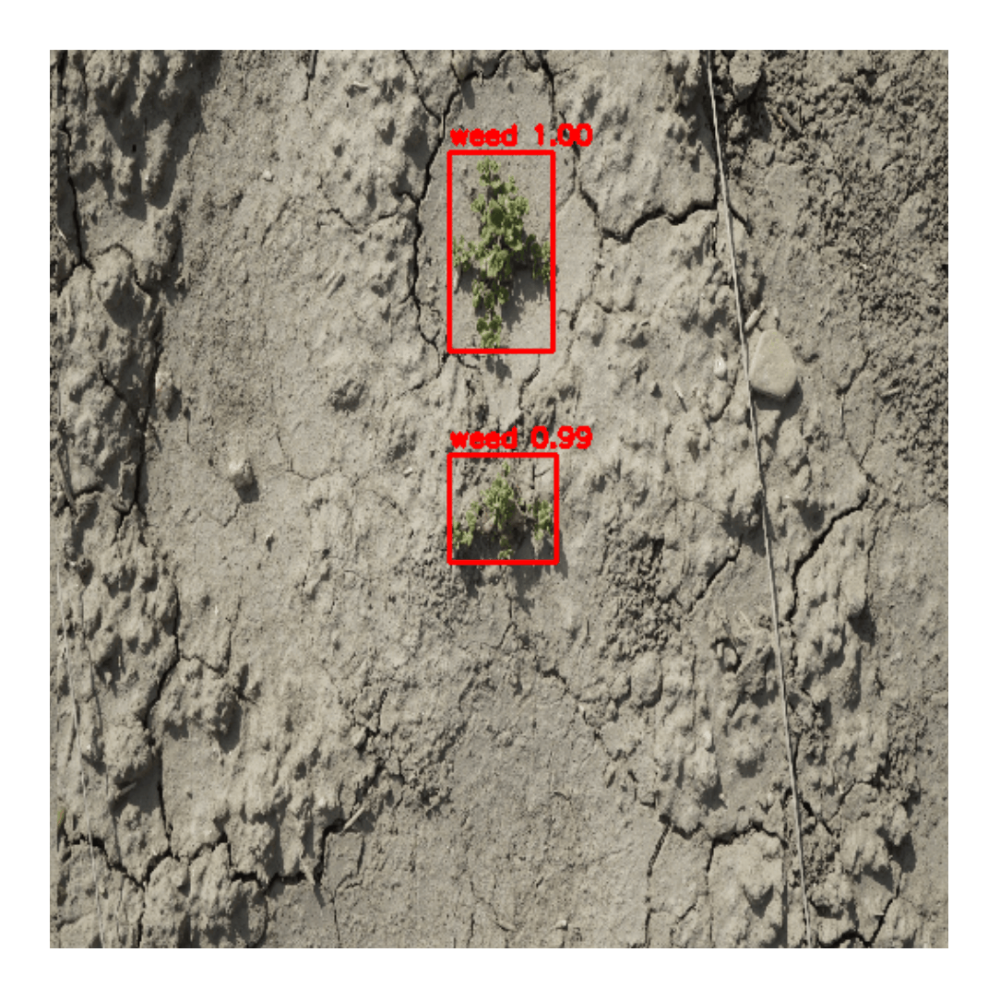
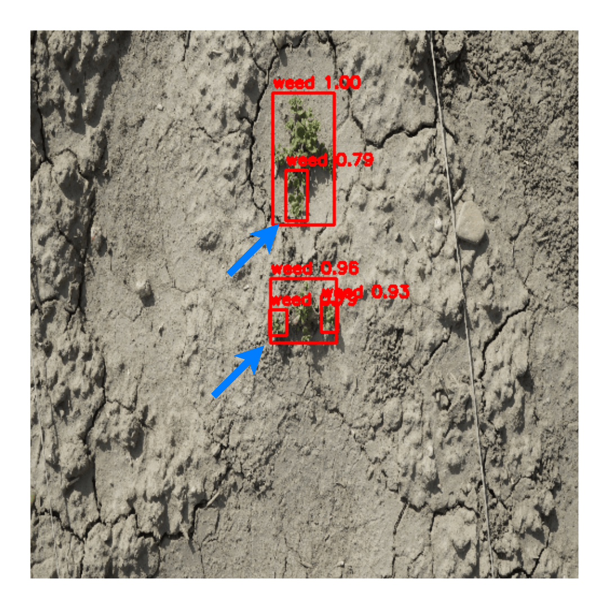
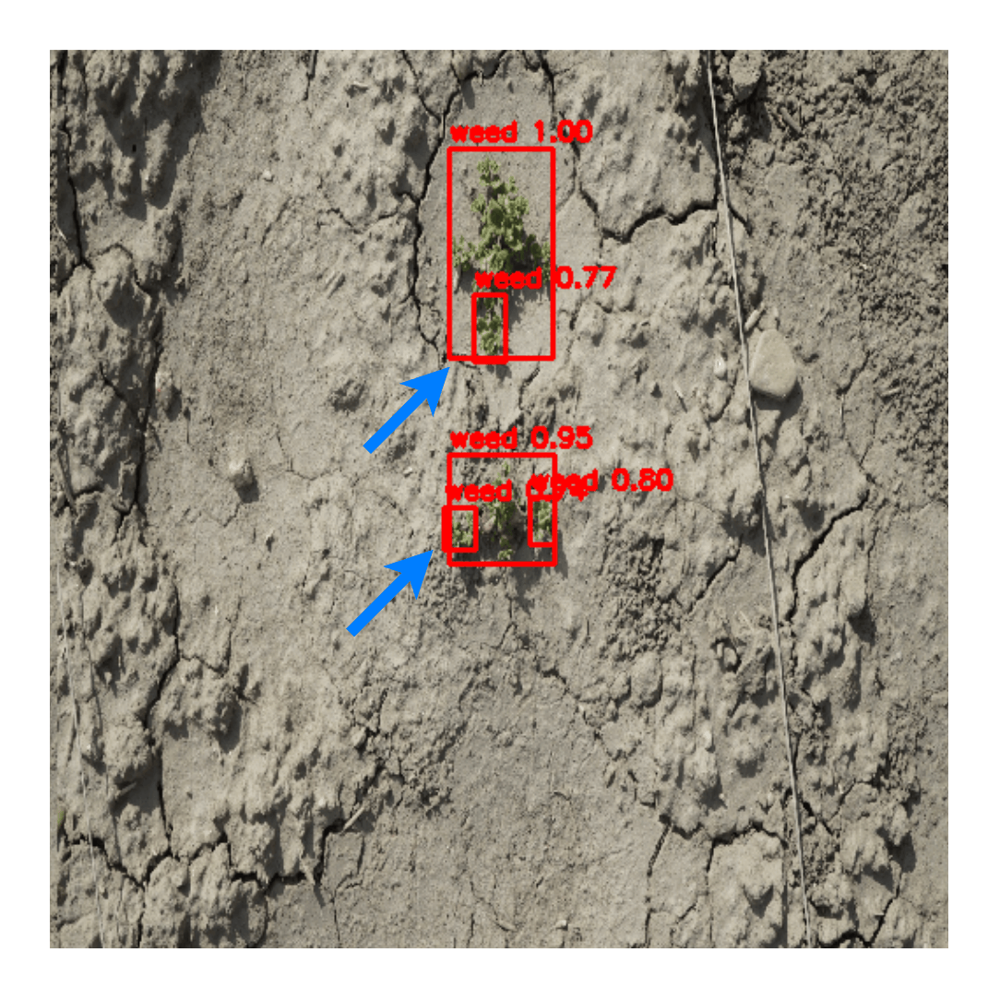
If you find this work useful, please cite: